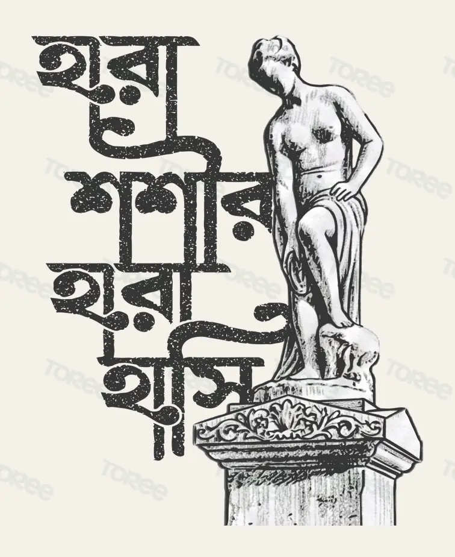
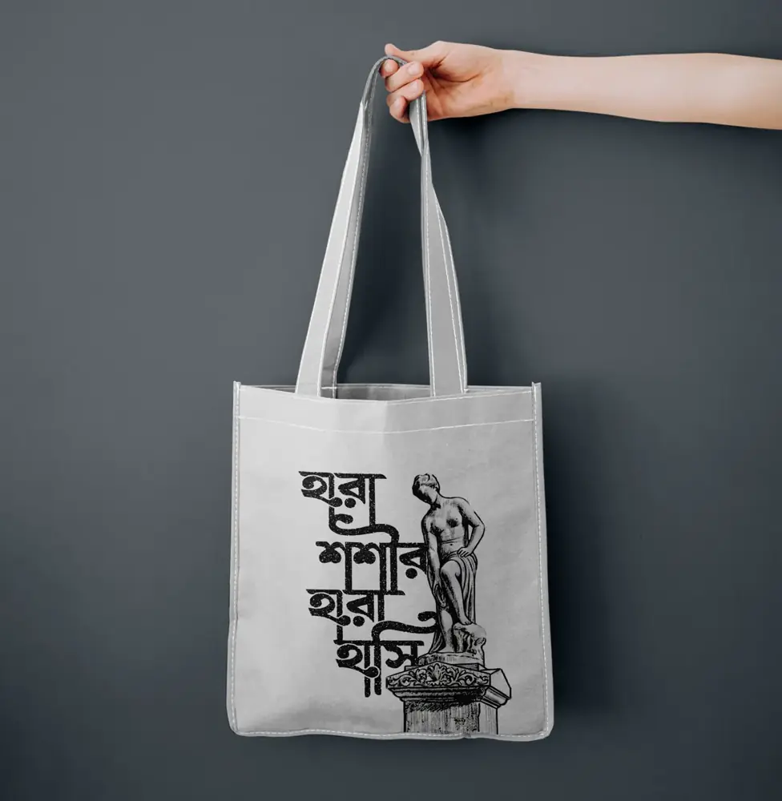

Chapter IThe House of the Moon
In Bangla, শশী means the moon. You will see it written in English as Shoshi or Shashi; both are used, and both are right. Spoken aloud in Bangladesh, it sounds like shaw-shee, soft at both ends.
At the end of the nineteenth century, in Mymensingh, an old river town on the Brahmaputra in northern Bangladesh, Maharaja Suryakanta Acharya Chowdhury of Muktagacha built a palace and named it for his adopted son, Shashikanta. The house of Shashi. The house of the moon.
On 12 June 1897 the great earthquake brought it down. The son did not let the name fall with it. Shashikanta rebuilt the lodge on the same ground, and by 1911 it stood again: a long, pale façade under a red roof, set in gardens of old trees, with a marble-lined pond and a bathing pavilion behind it.
For more than a century the lodge watched the town grow around it. The zamindars left. The house became a teachers’ training college. In 2015 Bangladesh took it into the care of its Department of Archaeology, to become a museum. Mymensingh never stopped calling it by its first name: Shoshi Lodge.
Something of that age survives on the bag: the carved pedestal at its centre, with scrolling leaves and a single flower, the slow, patient ornament of a house built to outlast the people who built it.
Chapter IIThe Woman in the Fountain
In the garden, at the centre of a marble fountain, stood a woman carved in white stone. She was a classical bathing figure, brought, it is said, from Italy. She was Venus, but the town simply knew her as part of the lodge, as permanent as its walls.
She looked down, half-turned, one hand at her hip, caught in the quiet moment before a bath. Children grew up passing her. Students came to sit near her. Lovers, painters and photographers made her the centre of their frames. If the lodge was the moon, she was its smile: হাসি, hashi, said haa-shee.
That is how we drew her: whole, one foot raised on the rock, exactly as Mymensingh remembers her.

Chapter IIIA Line Every Child Knows
Ask anyone who went to school in Bangladesh and they will finish the couplet for you. Generations of Bangladeshi students have been asked to expand it, explain it and carry it into their exams: do not fear the cloud, the sun is smiling behind it. The smile the moon has lost comes back through the darkness itself.
The meaning is plain and stubborn. Sorrow does not last. Darkness is the road the light takes on its way back.
The lines belong to Satyendranath Dutta (1882 to 1922), the poet Bengal called the wizard of rhythm. He wrote in meters that seem to move: the swing of palanquin-bearers, the run of falling water, the rhythm of long journeys. In forty short years he left verse that Bangladeshi children still recite a century later.
He was not writing about Mymensingh. He wrote of clouds and the moon, a century before the fountain fell empty. And yet his line holds the whole story without a single word changed. শশী, the moon, is the lodge that carries its name. হাসি, the smile, is the woman who stood in its garden. হারা, lost, is what became of her. অন্ধকারেই ফিরে আসে, returning through the dark itself, is what this bag sets out to do.
On the canvas the four words stand stacked one above another, a column of their own beside hers. The tail of হাসি curls toward her, as if reaching for what it lost.
Chapter IVJuly
In July 2024, Bangladesh woke up.
It began with students asking for something simple: fairness in who gets a government job. It became something far larger. When the protests were met with bullets, they did not stop. On 16 July, Abu Sayed stood in front of police in Rangpur with his arms open, and was shot. The image travelled faster than any shutdown could stop it. Schoolchildren joined university students. Parents joined their children. Rickshaw-pullers, doctors, artists and garment workers walked beside them.
They kept going. Through curfews and blackouts, through the nights when the internet went dark and no one knew who had come home, they kept going. Strangers handed out water at the barricades, carried the wounded and hid each other from the raids. The United Nations later estimated that as many as 1,400 people may have been killed between July and mid-August. Their families carried that grief, and the movement carried it with them.
On 5 August 2024 the government fell. A country that had held its breath for weeks breathed out.
Then the real work began. Young people painted the walls of their cities with colour, slogans and faces. With the police gone from the streets, students directed traffic at the junctions, swept the roads they had marched on and stood guard at night outside temples and neighbours’ homes. A generation that had been told to keep its head down had learned it could lift a whole country. It set out to build a brighter Bangladesh with the same stubborn dedication that had carried it through July.
This is the Bangladesh we know. The one that rose in 1952 for its language, in 1971 for its freedom, and in 2024 for its future.
Chapter VThe Shadow
Every great awakening casts a shadow. July was no different.
On 5 August, the day of celebration, a crowd entered the garden of Shoshi Lodge and broke the woman in the fountain. Her head was carried away and has never been found. What remains of her lies in pieces in the museum. The fountain stands empty.
She was not alone. In the days that followed, sculptures, murals and memorials were defaced across the country; one newspaper counted nearly fifteen hundred. In the rush of freedom, some lost sight of what freedom was for.
Look closely at the letters on the bag. They are cracked and chipped, like marble that has been struck, like paint on a city wall after the monsoon. We gave the damage to the words, so that she could stand unbroken.
Saying this takes nothing away from July. It tells July whole. The light was real, and so was the shadow. A country does not grow by choosing which half of its history to remember.

Chapter VIWhy We Carry Her
We did not make this bag to mourn, or to accuse.
We made it because history that is hidden does not disappear. It waits, and it returns, usually at the worst time. History that is carried, spoken and printed on the things we use every day becomes memory. And memory is how a people comes to know itself.
So she stands again, on her column, in ink on canvas. The column has no base; it runs past the bottom edge of the bag, the way history runs on past any page we try to close it on. The words beside her stay broken, because that is the truth of her now. She does not return as she was. She returns as she is.
Hara shoshir hara hashi, ondhokarei phire ashe.
The lost smile of the lost moon comes back, through the dark itself.
A story of Bangladesh. Yours to carry.